Small tools,
made with care.
Clapre makes quiet, private software for the Apple devices you already own. One thing at a time, done properly.
“Commit your work to the Lord,Proverbs 16:3
and your plans will be established.”
Every product starts here. We hand the work over first, then build it as carefully as we know how, and trust the outcome to Him.
What we believe.
Software should fit into your day without asking for attention. No noise, no nagging, no pop-ups.
No servers, no accounts, no tracking. What you do on your devices stays on your devices.
A fair price, paid once. No subscriptions, no ads, no in-app purchases.
Our work.
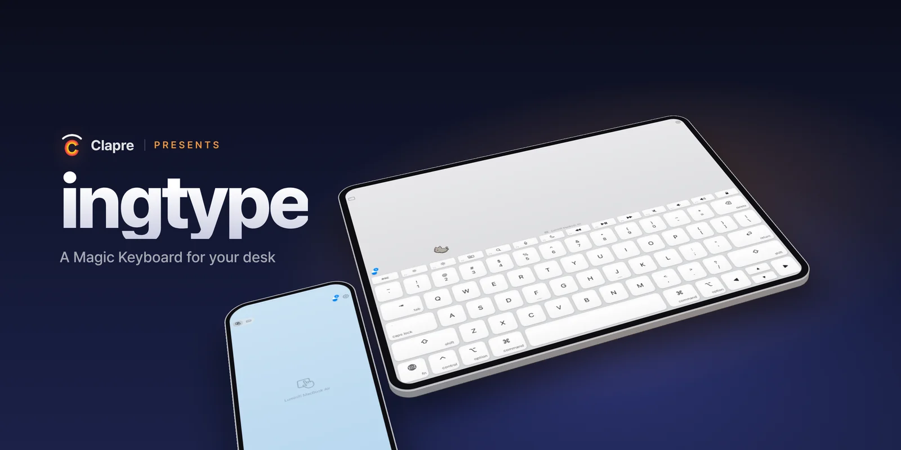
Your iPad. A Magic Keyboard.
Lay it flat and type with ten fingers. Completely silent. Your iPhone becomes the trackpad.
On the App Store · November 10

Feels exactly like a real keyboard.
ingtype sends key positions, not characters. Your Mac does the rest, so every language, shortcut and input method behaves exactly as it does on a physical keyboard.
- Zero lag on the same Wi‑Fi
- Any input method, including Korean, Japanese and Chinese
- Function row with brightness, volume and media keys
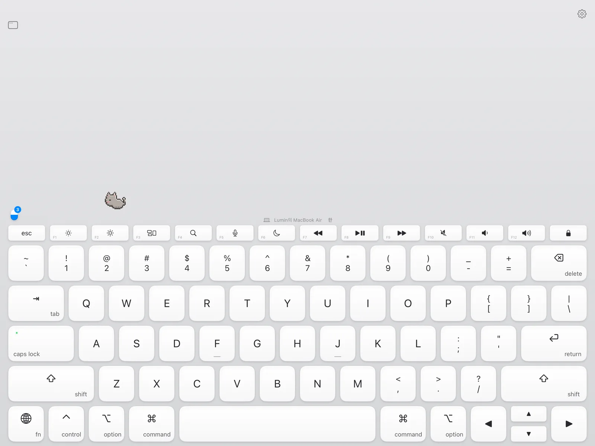
Eyes on the iPad.
Hands stay put.
A small window above the keys mirrors any Mac window, live. Open Mac apps or browse the web right there.

Five keyboards.
Your desk is one.
Basic, Ice, Glass, or All Custom in your own colors. Picture Custom turns a photo of your desk into the backdrop, with depth as you tilt. Tap one to see it.
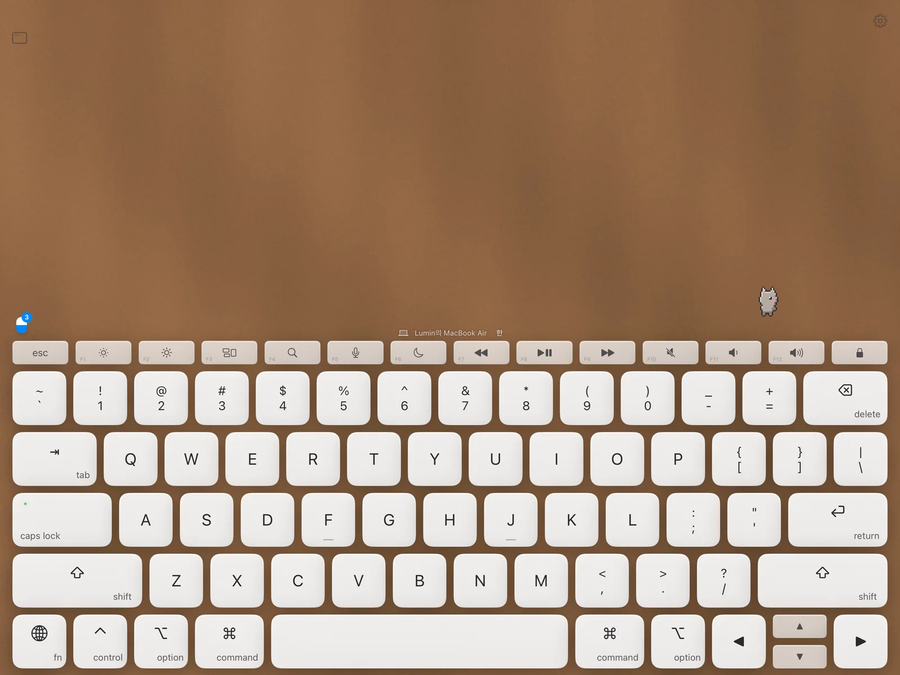
Your iPhone is the trackpad.
Tap, two-finger scroll, pinch, drag and three-finger gestures, with haptics on every click. Type on your iPhone keyboard and it lands on the Mac.
- Hold with two fingers and tilt to fly across the screen
- Emoji included
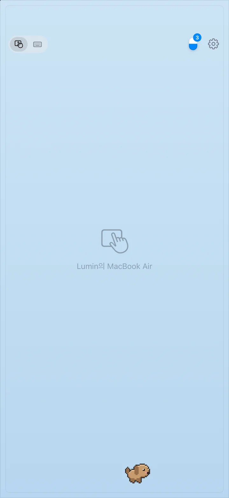
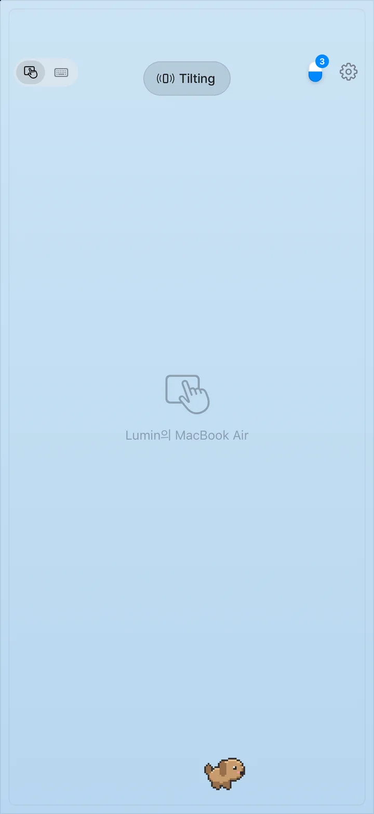
Little friends
on the keys.
32 pixel pets wander a single line above the keys, never in the way. They nap when you rest and hop when you tap.
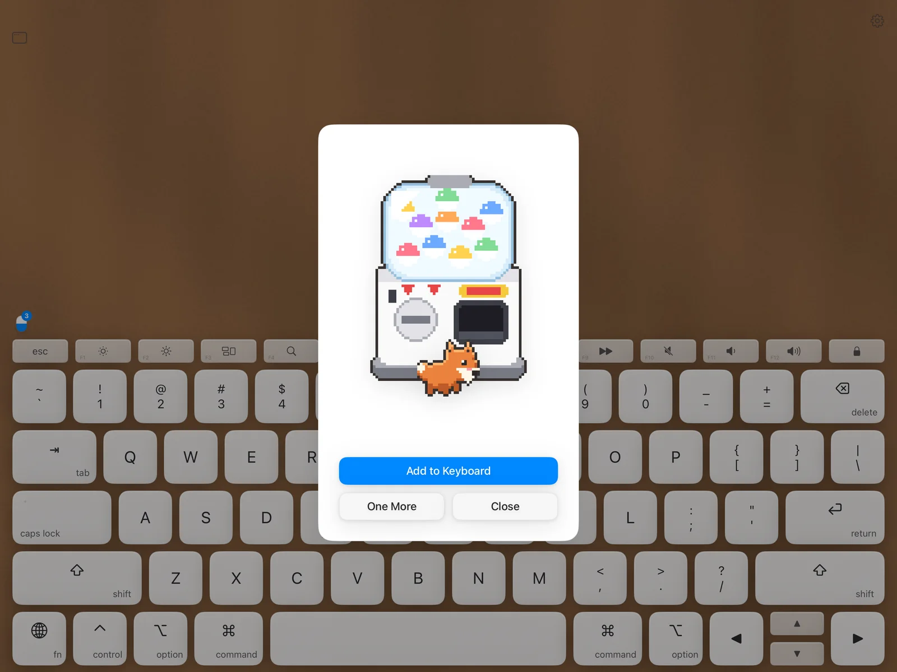
A closer look.
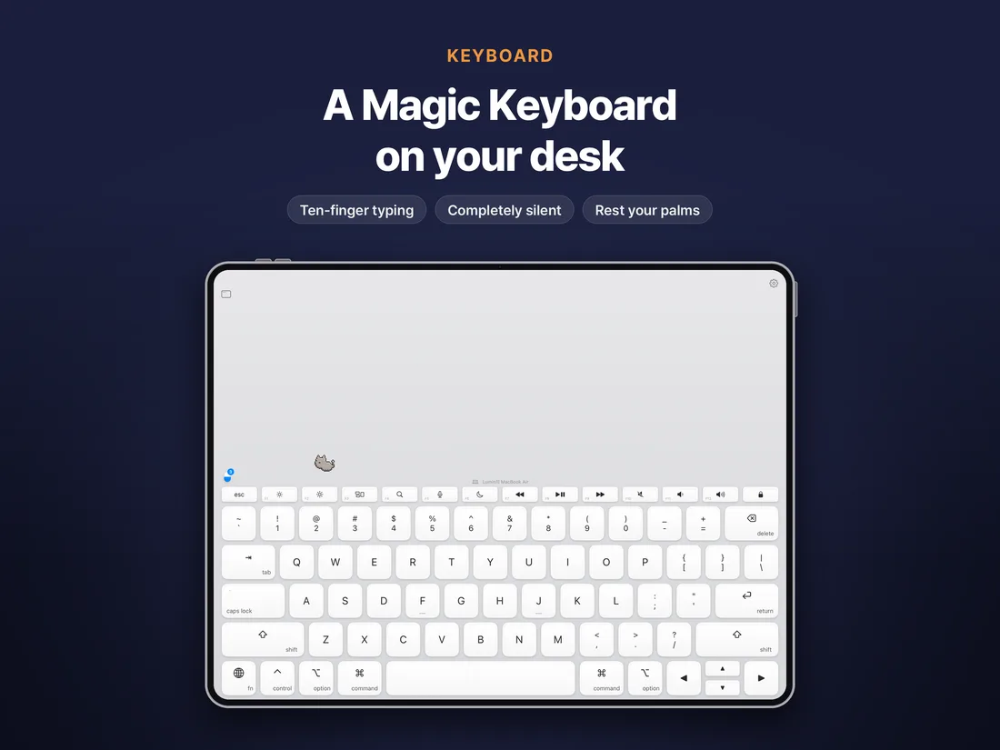
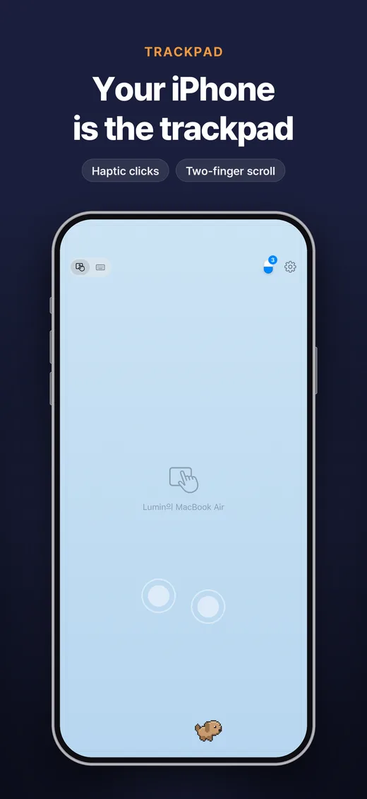
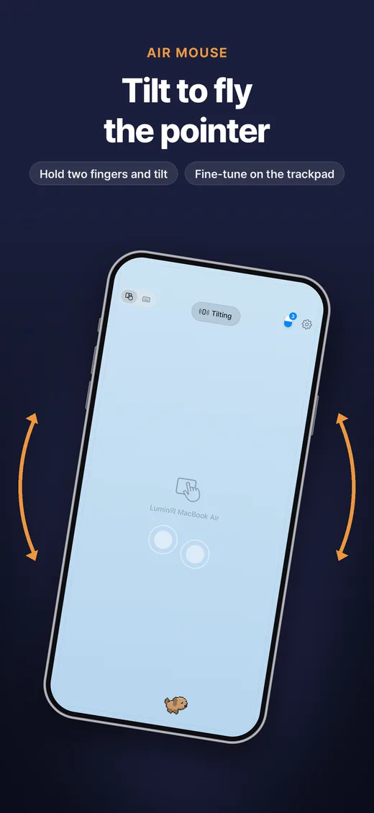

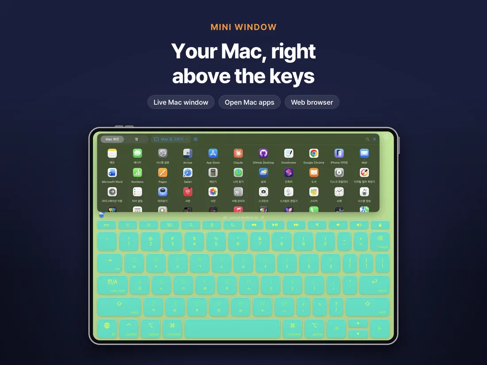
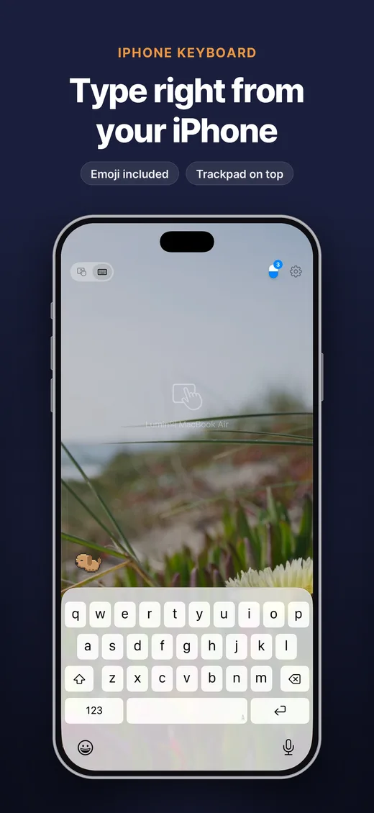
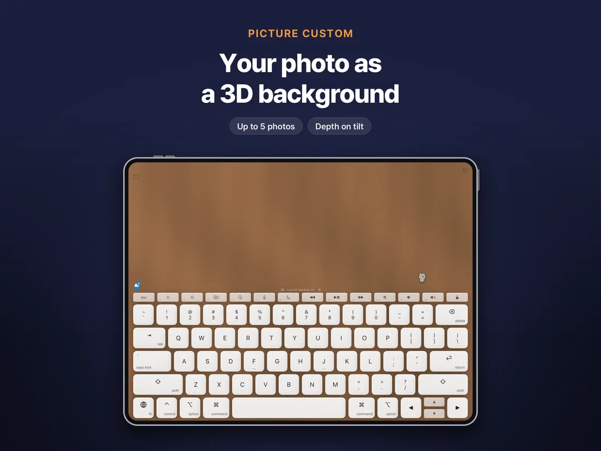
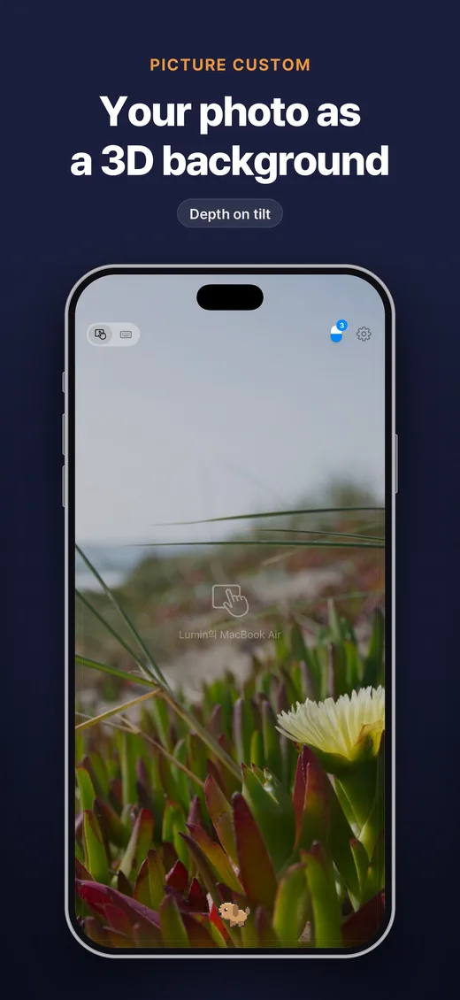

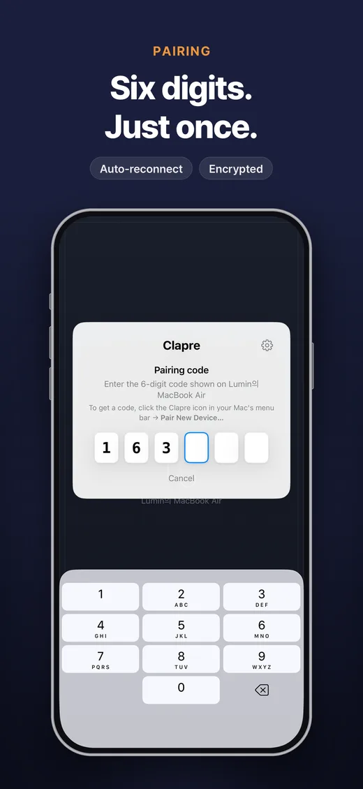
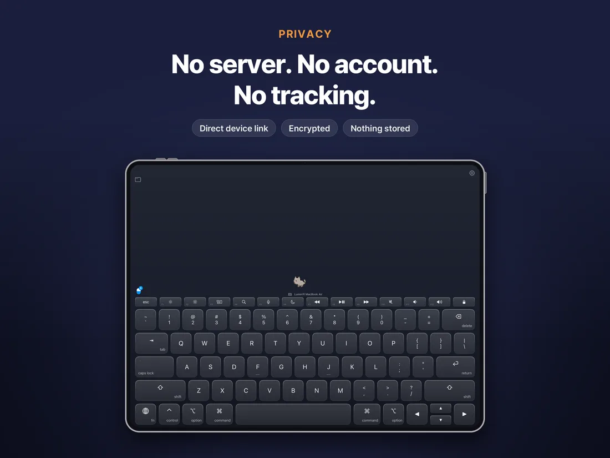
No server. No account. No tracking.
Your devices talk directly over Wi‑Fi, encrypted. We can't see what you type, because it never reaches us.
Pair once with the code on your Mac. Only paired devices can connect.
Keystrokes are handled the moment they arrive and are never saved.
Not a single tracking SDK. App Store privacy label: Data Not Collected.
One minute to set up.
Free. It sits quietly in your menu bar.
Mac menu → Pair New Device. Type it on your iPad or iPhone.
From then on it reconnects on its own.
Buy once for both iPad and iPhone. No subscription, no in-app purchases. The Mac app is free.
Support
Getting Started
- Install the Mac app. Open
ingtype.dmgfrom the download link on this page and move the app to Applications. On first launch it asks for Accessibility permission: System Settings → Privacy & Security → Accessibility → turn on ingtype. - Pair. Click the ingtype icon in the menu bar → Pair New Device. A 6-digit code appears.
- Open the app on your iPhone or iPad, choose your Mac and enter the code. After that it reconnects on its own.
The Mac app is free. The download link goes up here on launch day (Nov 10). Your Mac and iPhone/iPad must be on the same Wi‑Fi.
iPad as a Keyboard
- Lay the iPad flat and rest your wrists on the desk. iPadOS ignores touches near a resting wrist.
- In Settings → Multitasking & Gestures, turn off four/five-finger gestures so apps don't switch while you type.
- Modifier keys (shift, command…): tap once to apply to the next key, or hold while typing.
- Hold fn and tap the top row for F1–F12.
- For English-only legends: Settings → Keyboard → Key Legends → English Only.
iPhone as a Trackpad
| Gesture | Action |
|---|---|
| One-finger move | Move the pointer |
| One-finger tap | Click |
| Two-finger tap | Right-click |
| Two-finger swipe | Scroll |
| Long press, then move | Drag |
| Pinch | Zoom |
| Three-finger swipe | Switch desktops, Mission Control |
| Hold two fingers and tilt | Air mouse (turn on in Settings) |
The air mouse covers long moves; the trackpad handles fine control. Adjust sensitivity in Settings. The iPhone keyboard mode can send emoji too.
FAQ
My Mac doesn't show up.
- Make sure both devices are on the same Wi‑Fi. Guest, school and office networks often block device-to-device traffic.
- If so, turn on your iPhone's Personal Hotspot and join your Mac and iPad to it.
- Still missing? Connect by address: enter the address shown in the ingtype menu on your Mac (e.g. 172.20.10.2) under ‘Connect by Address…’.
- Check that the Mac app is running (menu bar icon).
- On iPhone/iPad, check Settings → Privacy & Security → Local Network → ingtype.
Connected, but nothing is typed.
Check the Accessibility permission on the Mac. After an update you may need to toggle it off and on.
The code doesn't work.
A code is valid for 2 minutes, and 5 wrong attempts require a new one. Close and reopen the pairing window on the Mac.
I hear key sounds.
The app is silent by default. Check that Key Click Sound is off in Settings.
Does one purchase cover all my devices?
Yes. iPhone and iPad share one app under your Apple ID, and the Mac app is free.
Contact Us
Send a question, a bug or an idea. Replies usually take 2–3 days.
Press Kit
Everything you need to write about ingtype: logos, screenshots and a short description.
Download Press Kit (ZIP, 4 MB)
About ingtype
Your iPad becomes a silent Magic Keyboard. Your iPhone becomes the trackpad.
ingtype turns an iPad lying flat on the desk into a ten-finger keyboard for the Mac, and an iPhone into its trackpad. It sends key positions instead of characters, so every language and input method behaves exactly as on a physical keyboard. Silent by default, with no server, no account and no tracking.
Fact Sheet
| Developer | Clapre, Seoul, South Korea |
|---|---|
| Release | November 10, 2026 |
| Platforms | iPad and iPhone (iOS 17+), free Mac app (macOS 14+) |
| Price | One-time purchase. No subscription, no in-app purchases. |
| Contact | clapre.app@gmail.com |
Privacy Policy
ingtype does not collect any personal information.
1. Information We Collect
None. ingtype does not:
- create accounts, require sign-in, or collect identifiers such as email or phone number
- store or transmit the text you type, your keystrokes, or your pointer movements
- use advertising, analytics, or tracking SDKs
- talk to any external server (there is no developer server)
2. Device-to-Device Communication
ingtype only talks directly between your iPhone/iPad and your Mac on the same network.
- Traffic is encrypted with TLS. Only devices paired with the 6-digit code shown on the Mac can connect.
- Keystrokes are sent as key positions (key codes), not characters. They are handled as input the moment they reach the Mac and are never stored.
- When the iPhone keyboard sends a character with no key position, such as an emoji, the Mac briefly places it on the clipboard, pastes it, then restores your previous clipboard.
- If you choose ‘Mac Screen’ in the iPad mini window, only the one Mac window (or display) you picked is compressed into video and sent to that iPad over the same encrypted connection. It stops when you close the mini window or disconnect, and nothing is stored. The Mac menu bar shows it while sharing, with a way to stop at once.
- Nothing is sent to the developer or third parties. Websites you open yourself in the mini window talk to those sites like any browser.
3. Information Stored on Your Devices
| Data | Where | Purpose |
|---|---|---|
| Paired Mac's name, identifier and connection secret | iPhone/iPad Keychain | Reconnect without a code |
| Paired iPhone/iPad's name, identifier and connection secret | Mac Keychain | Allow only paired devices |
| Settings (sensitivity, theme, pets, click sound…) | On device | App preferences |
| Picture Custom photos (up to 5 you take or choose) | iPhone/iPad app folder, excluded from backup | Keyboard and trackpad background. Never transmitted; delete in Settings |
| Pets you draw | iPhone/iPad app folder, excluded from backup | On-screen pets. Never transmitted; delete in Settings |
| Mini window website data (cookies, cache) | On iPhone/iPad | Keeps you signed in. Delete in Settings |
This data is never sent to the developer or any third party. Delete it any time with ‘Forget’ in either app; it is removed when you delete the app.
4. System Permissions
- Local Network: only to find and connect to your Mac.
- Camera (optional): only to photograph your desk for Picture Custom. ‘Choose from Photos’ receives only the photos you pick, without library access.
- Motion sensors: on iPad, to shift the background as you tilt it; on iPhone, only for the air mouse while you hold two fingers down (when turned on). Not recorded or sent anywhere but your Mac.
- Screen Recording (Mac, optional): only to show a Mac window in the iPad mini window. Only the window you pick, only while requested, nothing stored, no audio.
- Accessibility (Mac): required to deliver input to the Mac. Not used to read or record screen content.
5. Children's Privacy
ingtype collects no personal information from anyone, including children.
6. Changes
Changes will be posted on this page and in the app's release notes.
7. Contact
Clapre · clapre.app@gmail.com